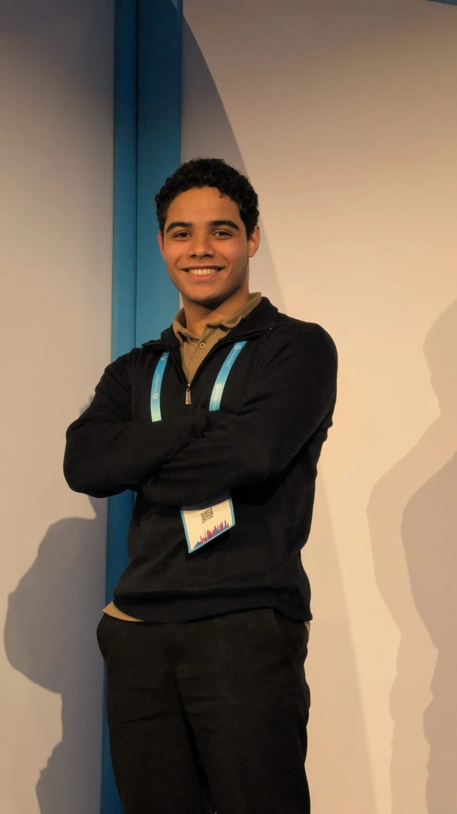

Kauan Gomes dos Santos
- RM
- [pendente]
- Turma
- [TURMA — pendente]
GitHub [LinkedIn — URL pendente]
Equipe · FIAP Global Solution 2026
GitHub [LinkedIn — URL pendente]

GitHub [LinkedIn — URL pendente]

GitHub [LinkedIn — URL pendente]
Desenvolvimento front-end e direção visual
GitHub [LinkedIn — URL pendente]